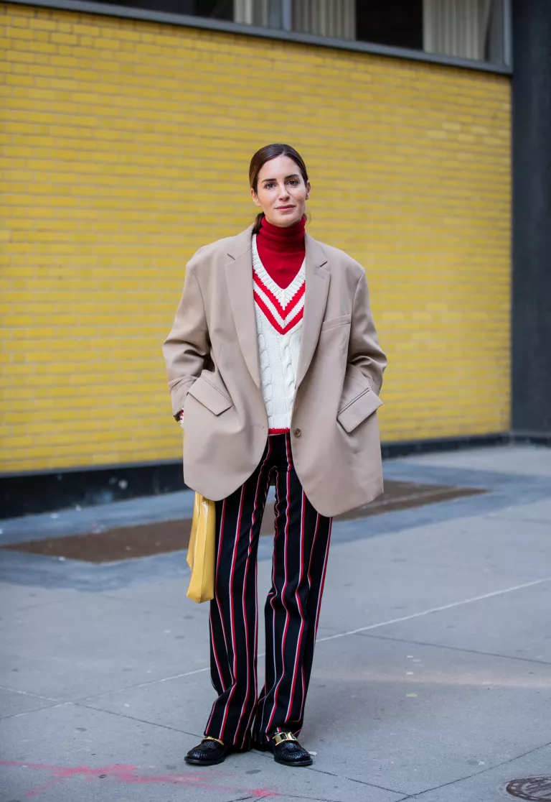
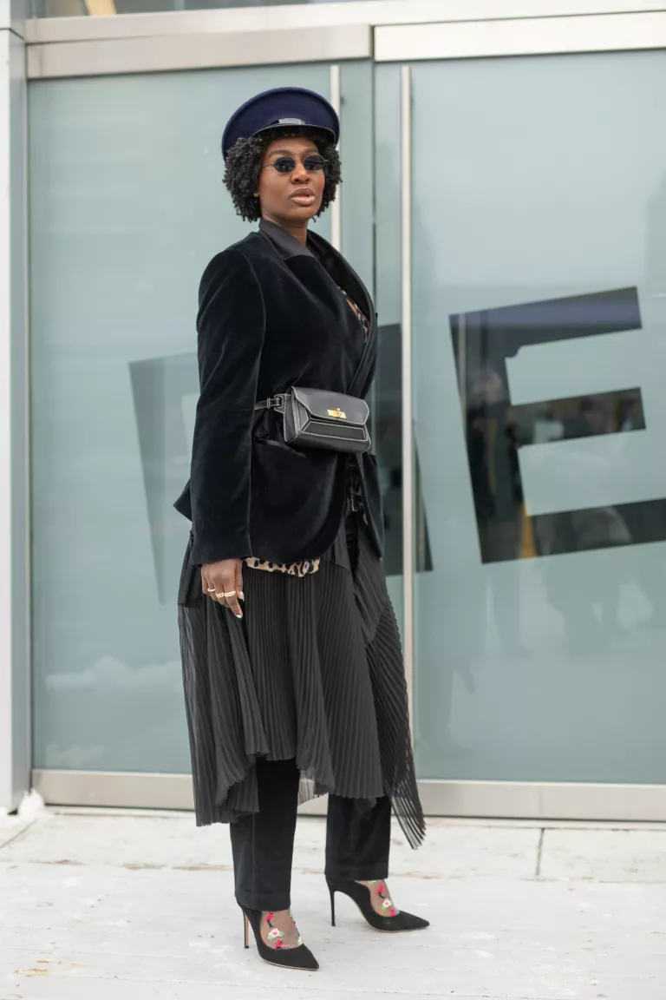
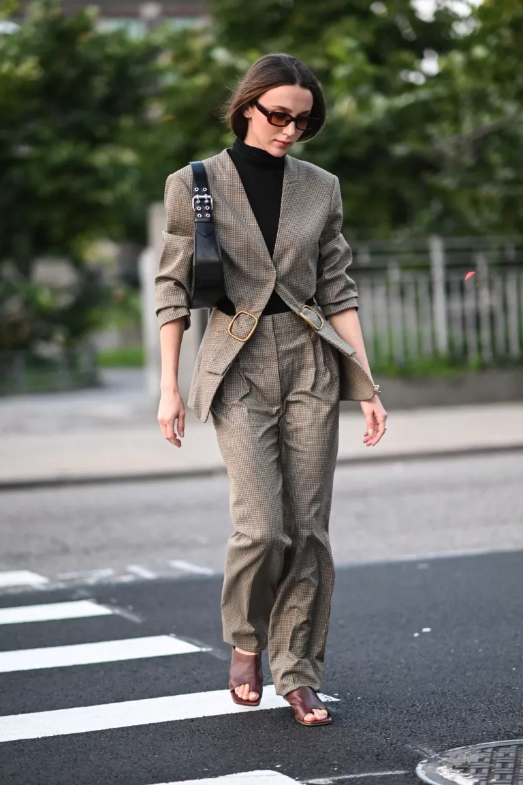
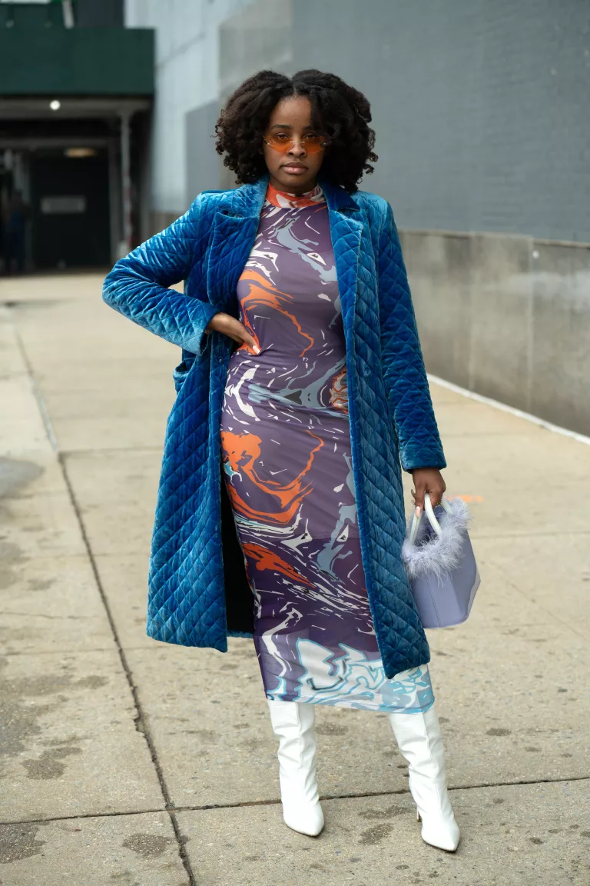

CUTE OUTFITS FOR WINTER
The key to pulling together a winter outfit for winter 2022 is to pair the pieces you know and love with a few fresh updates for the new year. A new oversized blazer looks great layered over your favorite colorful turtleneck, for instance. Or, grab your classic chunky cardigan and wear it with your denim jacket and a pair of matching jeans for a denim-on-denim look that just works without having to put in too much effort. It’s not about investing in an entirely new wardrobe. Rather, you can dig out the pieces in your closet that could use some updating and replace them with something that feels more in line with your current style.
1. Cool Prepster
2. Texture Play
3. Not Your Typical Suit
4. Color-on-Color
HOW TO DRESS FOR WINTER >>